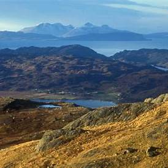

Stages
Day 1
- From: Glenfinnan
- To: A'Chuil bothy
- Total Distance: 18254.55 meters
- Total Elevation Gain: 700.00 meters
- Total Elevation Loss: 584.25 meters
| Worth a stop/detour: | |
|---|---|
| Glenfinnan Viaduct A historic railway viaduct, well-known for its appearance in the Harry Potter films. |

Source 1 |
| Glenfinnan Monument A landmark commemorating the Jacobite Rising of 1745, offering a view into Scotland’s history. |

Source 2 |
| Loch Shiel A scenic freshwater loch surrounded by hills and forests. |
Source 3 |
Day 2
Barrisdale is a privately owned and managed bothy and therefore, a £5.00 per person/per night tariff applies
- From: A'Chuil bothy
- To: Barrisdale
- Total Distance: 26583.43 meters
- Total Elevation Gain: 1049.25 meters
- Total Elevation Loss: 1184.50 meters
| Worth a stop/detour: | |
|---|---|
| Barrisdale Bay A picturesque coastal spot offering views of the surrounding hills. |

Source 4 |
| Knoydart Peninsula Known for its remote beauty and wilderness atmosphere. |

Source 5 |
| River Carnach A serene river flowing through Knoydart, accessible along the route. |

Source 6 |
Day 3
- From: Barrisdale
- To: Ratagan
- Total Distance: 27976.58 meters
- Total Elevation Gain: 1447.00 meters
- Total Elevation Loss: 1444.00 meters
| Worth a stop/detour: | |
|---|---|
| Loch Hourn A fjord-like sea loch with dramatic landscapes visible along the route. |
Source 7 |
| Bealach Ratagain A high pass with panoramic views over Loch Duich and surrounding peaks. |
Source 8 |
| Camasunary Bay A remote coastal spot with beautiful views over the Sound of Sleat. |

Source 9 |
Day 4
- From: Ratagan
- To: Camban bothy
- Total Distance: 17552.69 meters
- Total Elevation Gain: 661.75 meters
- Total Elevation Loss: 342.00 meters
| Worth a stop/detour: | |
|---|---|
| Five Sisters of Kintail A famous mountain ridge offering dramatic views and challenging hikes. |
Source 10 |
| Loch Cluanie A long, narrow loch near the trail, providing tranquil views. |

Source 11 |
| Glen Shiel Battlefield The site of the 1719 Jacobite rising, blending history with scenic beauty. |

Source 12 |
Day 5
- From: Camban bothy
- To: Maol Bhuide bothy
- Total Distance: 27199.98 meters
- Total Elevation Gain: 852.00 meters
- Total Elevation Loss: 841.00 meters
| Worth a stop/detour: | |
|---|---|
| Loch Calavie A peaceful loch surrounded by hills, ideal for a short break along the route. |
Source 13 |
| River Ling A small river winding through scenic surroundings, adding tranquility to the walk. |
Source 14 |
| Bealach Bhearnais A remote mountain pass with stunning vistas. |
Source 15 |
Day 6
- From: Maol Bhuide bothy
- To: Easan Dorcha (The Teahouse) bothy
- Total Distance: 31359.44 meters
- Total Elevation Gain: 1008.25 meters
- Total Elevation Loss: 1149.00 meters


Day 7
- From: Easan Dorcha (The Teahouse) bothy
- To: Shenavall bothy
- Total Distance: 38396.19 meters
- Total Elevation Gain: 1112.50 meters
- Total Elevation Loss: 1082.00 meters
| Worth a stop/detour: | |
|---|---|
| An Teallach Renowned for its jagged ridges and striking profile, this mountain dominates the view and is a highlight of the area. |

Source 19 |
| Fisherfield Forest Often called the “Great Wilderness,” it provides a rare sense of remoteness and natural beauty. |
Source 20 |
| Loch Broom Visible toward the end of this stage, the loch provides a sense of nearing civilization. |
Source 21 |
Day 8
- From: Shenavall bothy
- To: Junction bus stop (->Ullapool)
- Total Distance: 17410.79 meters
- Total Elevation Gain:771.50 meters
- Total Elevation Loss:903.25 meters
| Worth a stop/detour: | |
|---|---|
| Loch na Sealga A remote and peaceful loch, offering reflections of the surrounding hills. |

Source 22 |
| Ardessie Falls A series of waterfalls near the trail, perfect for a brief pause to take in the sights and sounds of rushing water. |
Source 23 |
| Ullapool A charming fishing village on the shores of Loch Broom. |

Source 24 |